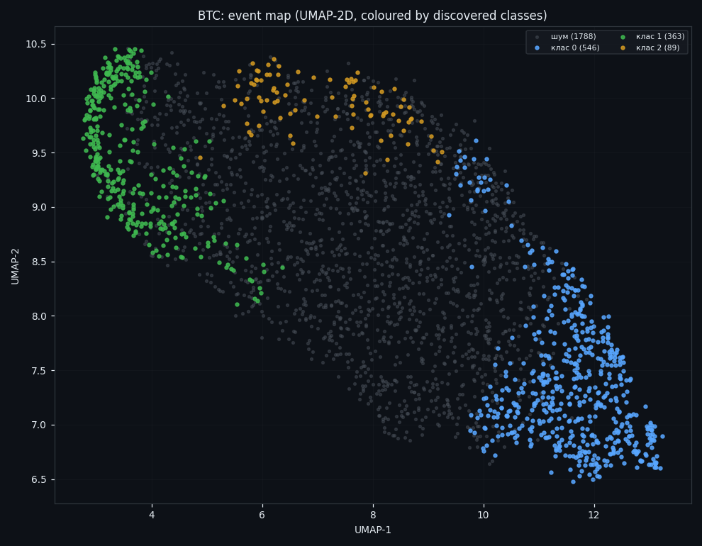
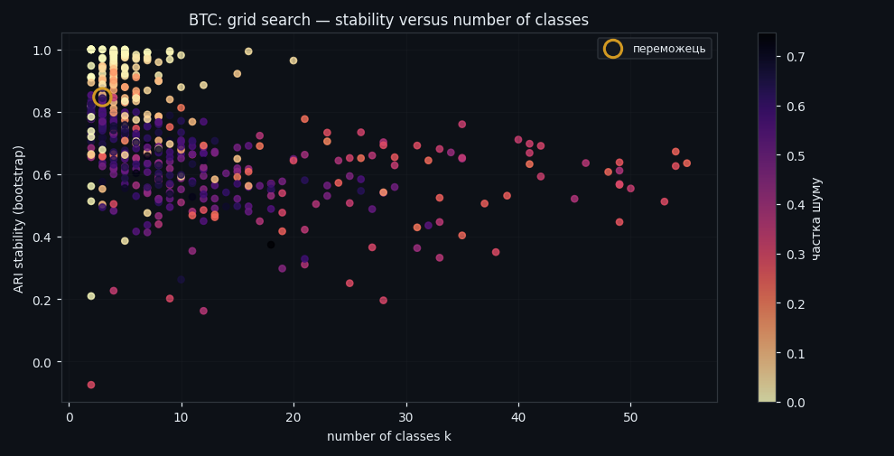
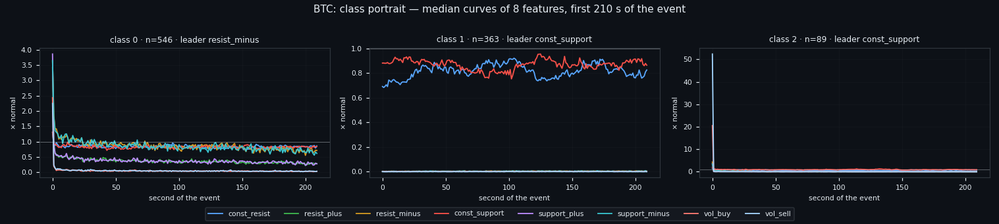
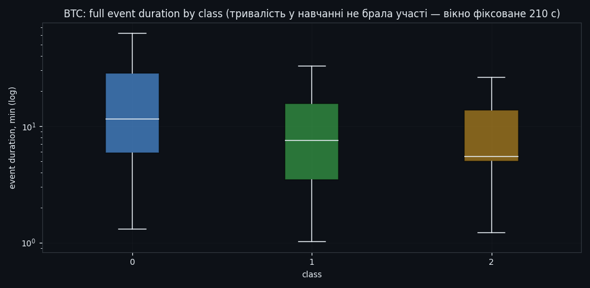
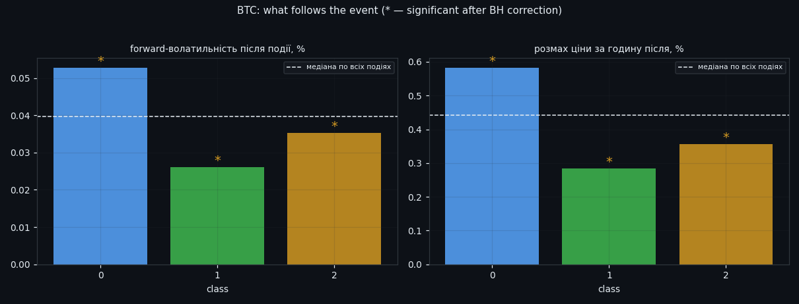
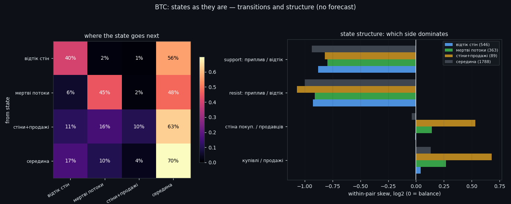

Event Classes Found Without a Teacher: 3 Survive, 60% Are Noise
We asked the order book to sort its own events into classes — 2,786 events, eight features, no price and no human labels. Out of 512 configurations only 5 produced anything stable, 60% of events belong to no class at all, and the three that do exist raise volatility while leaving direction at a coin flip.
Full walkthrough — streamed from YouTube.
① Let the data name its own events
Every earlier study started from a human definition: a spike is this, a wall is that. Here we did the opposite. We cut 2,786 events out of the archive, described each one as all 8 order-book features over a 210-second window, and handed that to an unsupervised pipeline — log transform, robust scaling, PCA, UMAP, then HDBSCAN. Price was not shown to the algorithm at any point; it only gets to comment afterwards.

② Most configurations find nothing — and that is the point
Clustering will always return something, so the real work is deciding what to believe. We swept 512 configurations and demanded stability, not beauty: only 5 survived the suitability filter. The winner explains 73% of input variance and lands on k=3 classes with bootstrap ARI 0.85 (sd 0.019).

③ Beating the shuffled null
A stability number means nothing on its own, so we ran the same pipeline on time-shuffled and fully shuffled data. Real data: ARI 0.61 on the full bootstrap and 0.67 across folds. Shuffled null: 0.33. The gap is the whole claim of this study — the structure is in the book, not in the method.
④ Sixty percent of events belong to nothing
The honest headline: 60% of events are noise — HDBSCAN refuses to assign them to any class, and we do not force it. Only 40% form stable groups. A classifier that labelled everything would look far more impressive and be far less true.
⑤ The three classes that do exist
What survives: class 0 — 546 events (19.6%), led by drain out of the sell wall; class 1 — 363 events (13.0%), led by the resting buy wall; class 2 — 89 events (3.2%), led by the resting buy wall. The portraits show the median behaviour of all eight features through the event window, which is what actually separates the classes — one is dominated by liquidity leaving the book, the others by resting liquidity standing its ground.

⑥ How the classes differ, feature by feature
The same difference stated as levels rather than curves: for each class, how far each feature sits from its own normal. This is the most compact description of what the algorithm found.
⑦ How long an event lasts
Median event duration is 7.7 minutes, and the distribution is wide and skewed — the classes differ in duration as clearly as they differ in shape.

⑧ What happens after — the part price is allowed to answer
Only now does price enter. Forward volatility after an event averages 0.0396 and the forward range 0.442, both meaningfully above the quiet baseline. Direction: 49.6% of events are followed by an up move — a coin flip, again, on classes that were found without ever looking at price.

⑨ Where the classes sit on the price line
The discovered classes drawn over the whole dataset, plus a zoom. Useful as a sanity check: the classes are not concentrated in one regime or one month.
⑩ Transitions between states
Which state hands over to which, and how the sides balance inside each one. Note what is absent: no forecast is claimed here — transitions are a description of the sequence, not a prediction of it.
Research, not financial advice.

If this changed how you read the tape, the natural next step is Volume Is the Fuel — Not the Steering Wheel — We recorded the Binance order book every second for six coins over five months and ran eighteen tests on what volume really does.
Volume Is the Fuel — Not the Steering Wheel
We recorded the Binance order book every second for six coins over five months and ran eighteen tests on what volume really does.
About Market Research Lab — What We Collect and Why
Most market commentary is storytelling.
From Calm to Calm: a Standard for What Counts as a Signal (BTC)
We stopped defining market signals with a stopwatch.
The Wall That Goes Quiet: What Resting Liquidity Predicts
We measured resting limit liquidity sitting on both sides of the book second by second across six coins, and asked the only question that matters:….
Comments
Discussion is powered by GitHub. Enable it by adding secrets/giscus.json (repo IDs from giscus.app).